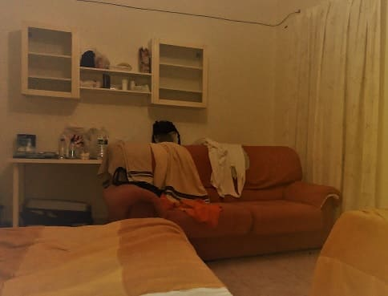
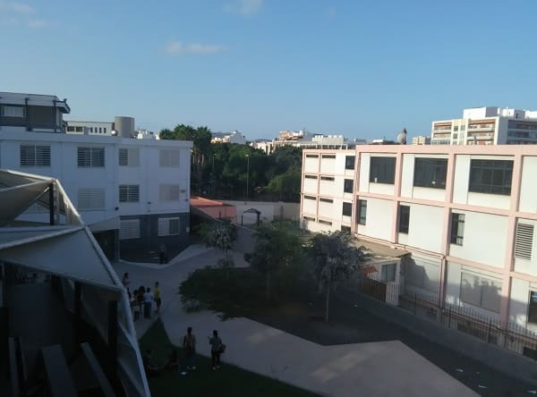
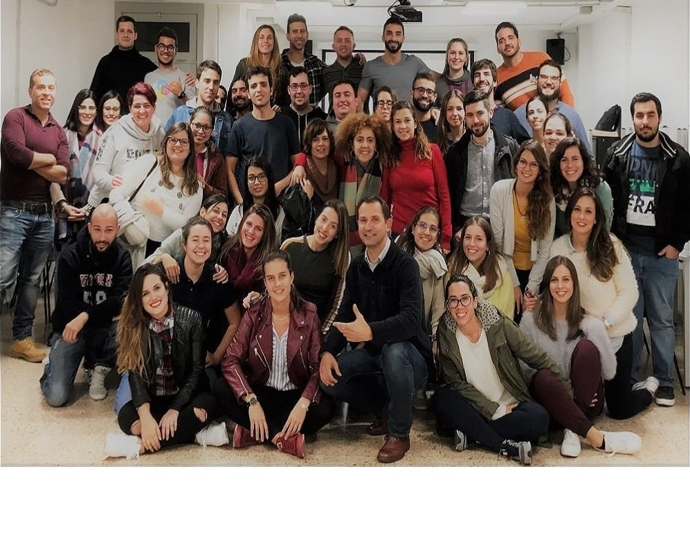

At the end of September 2017 I arrived in the Canary Islands to study the Master that gives access to be a teacher and teach in the Spanish state.
Although the objectives were varied since part of making the master had more ambitious plans that I could not do due to a problem in the back. Already knowing these lands and the different neighborhoods of Las Palmas, I began by renting through the now famous AirBnb apartment portal. My residence was in the neighborhood of Tomas Morales, very close to the Faculty of Education of the University of Las Palmas de Gran Canaria, just 50 meters from the Obelisk. For 20 euros per day a large room with two beds and a sofa and access to the services of the house.
It was unbearably hot, those that stick to the shirt but I have nothing against the heat. Below I show some pictures of the faculty.
I was happy with the good atmosphere that was breathed in that campus and it is already known that in teaching people live well.
Also, being in the city and near the sea, the weather was excellent, except for the excessive embarrassment for a month like October, as I mentioned before. What surprised me was to contemplate that the rooms of the faculty did not have more with two small fans per classroom. Classrooms in which we found about 50 students. In some other 70 students came to cohabit.
It was showy the great use of fans on the part of the students and that they were canaries and they were accustomed to those fluctuations of temperature.
The neighborhood of Tomas Morales I liked a lot, a very quiet middle class neighborhood and the Obelisco campus as well.

 At the end looking for a house through different portals I got one on Avenida Jose Mesa y Lopez, the most important street in the capital that connects GC1 with GC2, the 2 most important highways of the island, as well as connecting all the streets that start from Barrio de las Canteras, the most important and longest beach in the capital.
At the end looking for a house through different portals I got one on Avenida Jose Mesa y Lopez, the most important street in the capital that connects GC1 with GC2, the 2 most important highways of the island, as well as connecting all the streets that start from Barrio de las Canteras, the most important and longest beach in the capital.
My house was also near Plaza Santa Catalina where there are many nightlife venues. In addition, it was close to the central market where the food was already cheap because it was even cheaper in the Canary Islands.
Specifically, I went to the top floor of Jose's fruit shop, whose prices are quite good, especially basic goods in the Canary Islands, such as bananas, potatoes, tomatoes, lemons, onions and lettuce. Then certain fruits are quite cheap in certain occasions such as papayas, avocados, or mushrooms depending on the time.

While those first months until Christmas I could not enjoy the island since I had a major injury in the back from which I would not recover until April almost the following year.
Here I show a picture of my class and one of the best teachers I have had, not only of this master but of my educational life. He knew very well how to connect with students and when to say things and how to say them. It is also true that he had an advantage since he is a psychologist and has a lot of experience in this field.
With the advantage of those classes I was able to connect many concepts that I had already learned but that I did not know where to place them and make them more tangible.
Concepts that can not only be applied to the art of explaining and teaching, but that can be applied to other fields such as technology or even finance, which is one of the topics that I have tried to understand a short time ago. Most decisions always attend to logical reasoning but also take into account a context that carries coupled emotions or sensations at the time they are made. In a world where mathematics plays a decisive role in financial operations, sale and purchase of financial assets, acquisition of contracts, rise in interest rates also enjoy that matter that not only robots can calculate with simple algorithms.
Euphoria and fear are emotions that can not be measured but that play an important role in times of volatility of values and that must be taken into account when making important operations. This any of the current brokeres know it but there are tools so that they do not affect in the key decisions or mitigate that winning feeling to reduce the risk. This I will explain in my blog of economics when necessary.
Here I leave pictures of some obelisk classes, a very diverse class with people from different fields and specialties, such as humanities, philology, economics, social, engineering, health or sports.
Gran Canaria has many places to visit, both mountain and beach or forest. In my almost two years of staying in Gran Canaria I have been able to walk around the island and know almost every corner (perhaps with the exception of the Tamadaba park).
Here I show a summary of photographs of the sites that stand out. To see more visit the section of the Canary Islands .
By using this site you agree to our Terms and Conditions. Please Accept these before using the site.
© 2016 - All Rights Reserved - Diseñada por Sergio López Martínez
El sitio se mantiene gracias a la publicidad, por favor Desactiva Adblock para seguir navegando
He desactivado Adblock![[Valid RSS]](https://www.onepointsync.com/wp-content/uploads/2016/08/valid-rss-rogers.png "Validate my RSS feed")